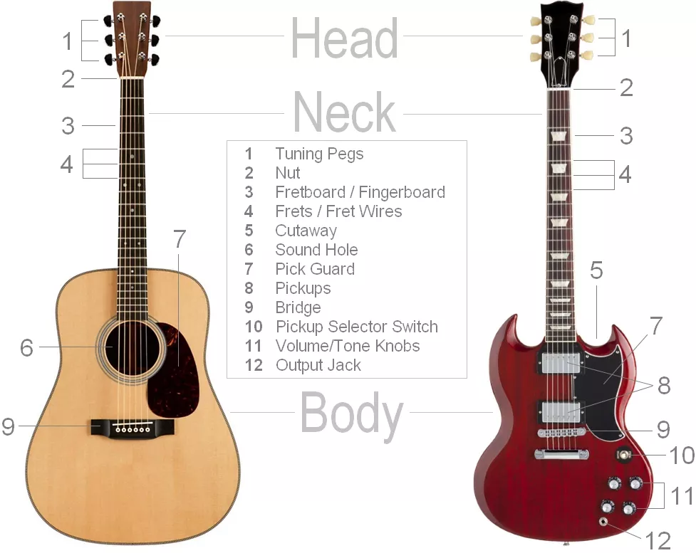
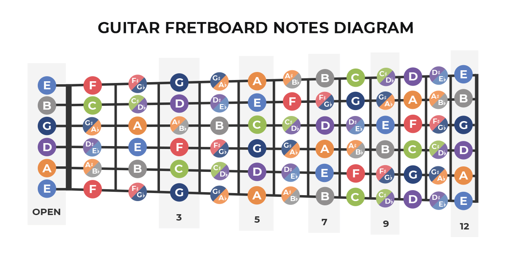

Let's Get Started with Theory
Music theory is an entire beast, and one simply doesn't cover the entire breadth of it in a simple little website intended to just get you started, but we can get started with the basic essentials for a guitar player. First, familiarizing yourself with the parts of your guitar.

Here, you see a handy diagram. It shows an electric guitar and acoustic guitar, the bass is not here but the principles are still the same as the electric guitar. The most important parts to familiarize yourself with are the frets, fretboard, tuning pegs, strings, neck, and bridge.
Of these, the most important is the frets. Each fret starting from the top of the fretboard (next to the nut) to the bridge goes higher in pitch.
A standard guitar is tuned in EADGBE in order from the lowest to the highest string. The musical scale is composed of octaves each comprised of 12 semitones or half steps. This is called the Chromatic Scale. It is laid out in the following way:
Ab/G#, A, A#, B, C, C#/Db, D, D#/Eb, E, F, F#/Gb, G
You may notice some slashes where there are 2 notes. These are called Enharmonic Equivalents. Basically, these notes sound the exact same with no distinction between another.
A fretboard has frets all laid out in sequence. They are laid out like this because they follow this principle of semitones or half steps. If you are in standard tuning and you pluck your lowest string without touching anything else, you will hear an E note. If you play the 1st fret, next to the nut, you will hear an F. So on, so forth, this is true for the entire fretboard.

This picture is structured as if you are looking down at the guitar as you hold it. The Low E is at the bottom because it will be the string closest to your face. This is how all guitar tabs and sheet music are structured. If you look at the Low E, you may see that at the 12th fret, the octave repeats. If you remember that the chromatic scale is comprised of 12 semitones or half steps, this makes complete sense. On most guitars, this is even visually indicated by 2 dots on the 12th fret. Learning the notes of the fretboard helps many professional musicians to compose music, compose chords, and make playing easier without going all over the guitar like a madman.
Have you gotten a guitar and tried to play a note on the fretboard? You may notice when you pluck the string, you get a buzzing sound that does not sound too pleasant. If you are sure that you are in tune, look where your finger on the fret is. To get a clear note and to make notes easier to play without pressing too hard, press down just behind the next fret. Not on the metal bar, but just behind it. If you press down further away from the next fret, you will have to press harder and you may get unwanted noises, such as that pesky buzzing.
With all of this in mind, I believe you have a good frame of reference to start looking into more information or maybe even start playing scales!